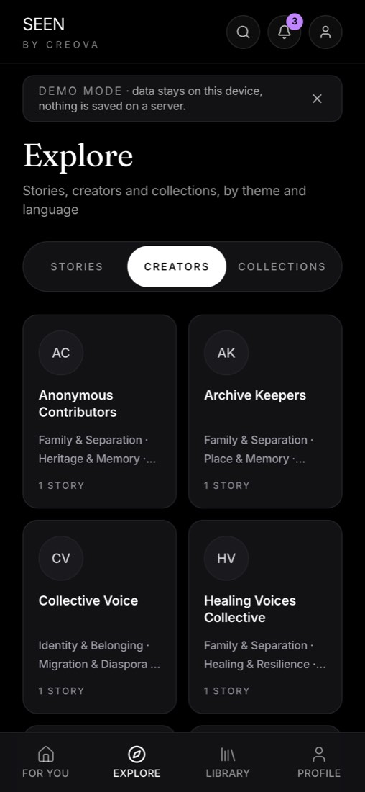
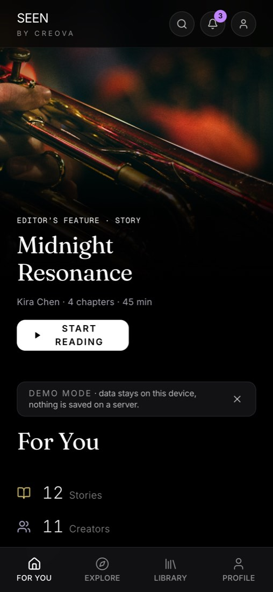
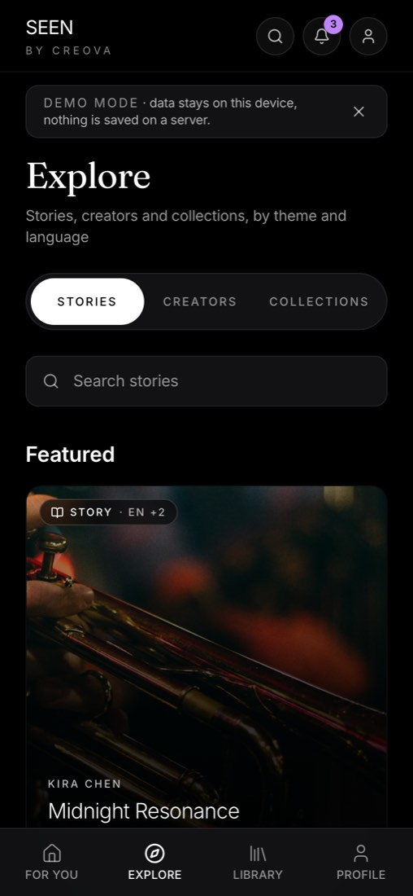

Des histoires en trois langues
Lisez ou écoutez des univers d'histoires en français, en anglais et en espagnol, et changez la langue de l'app à tout moment.
SEEN est un produit de CREOVA · Visiter creova.one
Note de terrain / 001
SEEN est un lieu pour les histoires communautaires en français, en anglais et en espagnol. Lisez et écoutez des histoires, suivez celles et ceux qui les racontent, explorez des collections et trouvez du financement pour les conteurs.
Essayer la démo Voir l'état de la bêta
La démo utilise des histoires et des comptes d'exemple. Ce que vous y créez reste dans votre propre navigateur.


Point de vue
On commence par l'histoire : qui la raconte, dans quelle langue, et qui peut l'entendre.
SEEN est un produit de CREOVA en développement. Cette page est une invitation à regarder de plus près, pas une boutique et pas une promesse.
Trois façons d'entrer
Lisez ou écoutez des univers d'histoires en français, en anglais et en espagnol, et changez la langue de l'app à tout moment.
Suivez des créateurs, enregistrez des histoires et explorez des collections réunies autour d'un thème.
Découvrez du financement pensé pour les conteurs, au même endroit.
Faites votre SEEN
Choisissez une option par ligne pour obtenir une idée d'histoire à emporter dans l'app. Vos choix restent sur cette page.
Votre SEEN Calme · Histoire · Français
Une histoire sur la seule pièce de la maison qui ne devient jamais bruyante.
En voici une pour commencer.
Dans l'app
Un petit tour de la démo de l'app.

Écrans de la démo de l'app, qui fonctionne avec des histoires d'exemple (interface en anglais).
Créateurs
Racontez votre histoire à votre façon.
Partagez vos histoires avec celles et ceux qui les aimeront. Votre mention de crédit et votre consentement passent en premier.

Lecteurs
Ouvrez une histoire et commencez à lire ou à écouter.
SEEN fonctionne sur les petits téléphones et est conçu avec l'accessibilité en tête.

Où nous en sommes
La démo est ouverte à l'essai. Elle fonctionne avec des histoires et des comptes d'exemple, et tout ce que vous faites reste dans votre propre navigateur.
Les dates et le contenu peuvent changer. Nous mettrons cette page à jour le cas échéant.
Bon à savoir
Oui. La démo est ouverte. Elle fonctionne avec des histoires et des comptes d'exemple, et ce que vous y créez reste dans votre propre navigateur.
Nous prévoyons la bêta 1 pour janvier 2027. La date reste à confirmer, et nous mettrons cette page à jour.
Non. L'app fonctionne en français, en anglais et en espagnol, tout comme ce site.
CREOVA, un studio de récit culturel en Ontario.
Les outils pour créateurs font partie du plan de la bêta. Nous en dirons plus quand ils seront prêts.

SEEN est conçu par CREOVA, le studio derrière des outils pour les travailleurs culturels qui refusent de sacrifier l'intégrité de leurs récits à la faveur des algorithmes.
Photographies issues du travail communautaire et événementiel de CREOVA.
En développement · Démo ouverte · © 2026 CREOVA